This page contains confidential investment analysis. Enter the access key you were provided to continue.
Đường Thành Thái, Phường Diên Hồng (former Quận 10), TP HCM
35% pre-tax IRR over 35 years — but it asks investors to fund a 176 B VND cumulative shortfall before the math turns.
The case for a new private bilingual school at Đường Thành Thái, Phường Diên Hồng (the newly reorganized ward in former Quận 10, central HCMC) rests on three things the city's own published numbers establish: a school-age population still growing in absolute terms, a system-wide gap in teachers and classrooms, and a national-level decision to make English the second language of instruction in schools.
HCMC's own 2024–25 general-education report concedes the network of schools and classrooms "still does not meet learning demand": class sizes remain elevated due to mechanical population growth, and some wards still lack a primary school entirely. The city is shifting toward what it calls a "high-quality, advanced, internationally integrated" private-school model to absorb pressure on the public system.2
Two regulatory tailwinds compound the demand picture: the national QĐ 2371 program formalizes English as the second language of instruction in schools (2025–2035), and the local administrative reorganization under NQ 1685/NQ-UBTVQH15 created Phường Diên Hồng (merging former Phường 6, Phường 8, and part of Phường 14 of Quận 10), redrawing the catchment area for this site.3,4
Two-thirds of HCMC parents in the income bands that can support 15–20 M VND/month tuition treat English-medium content as a base requirement, not a premium feature. A Bộ GD&ĐT-curriculum school with bilingual subject delivery — and a planned chương trình tích hợp (integrated dual-diploma) pathway with a private K-12 partner school in the United States5 — sits exactly where regulatory direction and parent demand intersect.
The case does not rest on being the only or best bilingual school in the area. It rests on the gap between the addressable enrollment in this catchment and the number of qualified seats. The §3 ramp models a school that captures ~1,000 of those seats by Year 5, growing to a 2,000-student cap thereafter — a small fraction of the THCS-level annual increase alone.
A multi-level facility on Đường Thành Thái, Phường Diên Hồng, TP HCM — an existing structure being renovated and expanded by Công ty Tây Nam (the facility owner), operated under the Toàn Việt brand. Year 0 is the renovation of the existing building; Year 3 is an expansion build to support the full 2,000-student capacity.
Two-entity setup. Công ty Tây Nam holds the property and is responsible for the physical asset and long-term lease (35 years). Công ty Toàn Việt (or a Toàn Việt-brand operator) — separate legal entity, same shareholder group — runs the school under its own brand and is responsible for curriculum, staff, and admissions. The school will pursue chương trình tích hợp with a US private K-12 partner school after licensing.5
The base case treats land rent between Tây Nam and Toàn Việt as zero, since Tây Nam is the intercompany lessor. The §5 live model has a market-rent slider so investors can stress this assumption against a hypothetical arm's-length rent — relevant if the structure ever unwinds or if Toàn Việt is evaluated standalone.
| Level | Classes | Students | Teachers |
|---|---|---|---|
| Primary (Lớp 1–5) | 33 | 990 | 52 |
| Lower-secondary / THCS (6–9) | 18 | 540 | 36 |
| High school / THPT (10–12) | 17 | 470 | 38 |
| Total at capacity | 68 | 2,000 | 126 |
~400 total staff at capacity including admin, support, and operations.5
Floor use per source project document, Section 4. Primary occupies ground floor through Tầng 2 to minimize vertical movement for younger students; secondary on Tầng 3–4; shared assets (auditorium, sports) on Tầng 5 and ground.
Architectural renders from the project document. The facility includes standard classrooms, specialty rooms (STEM / food-tech / makerspace, art, music, dance), a science lab, library, auditorium, sports facilities (gym, pool), and dining.
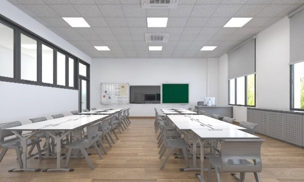
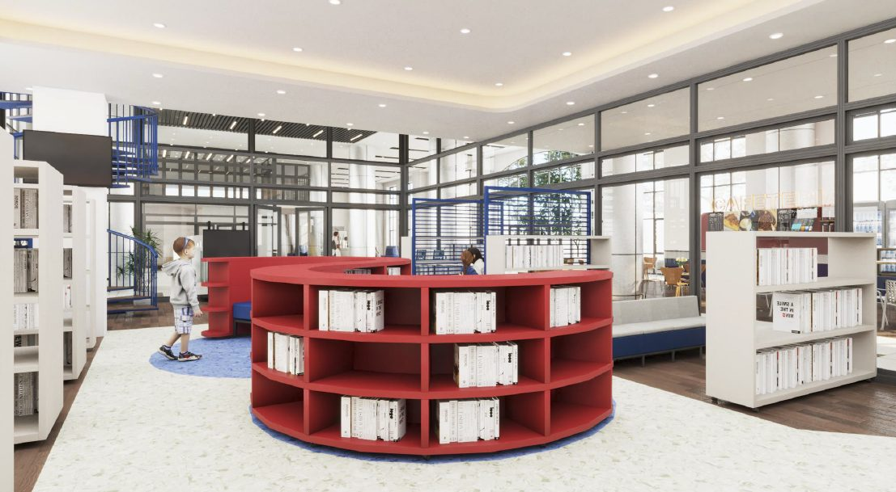
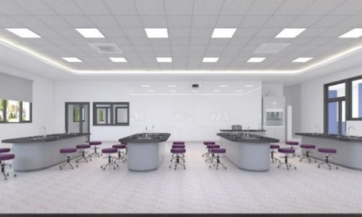
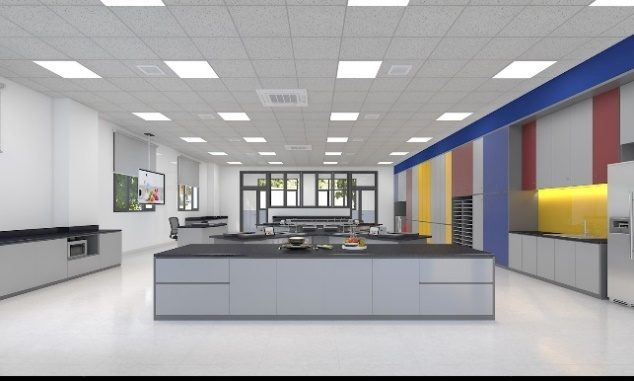
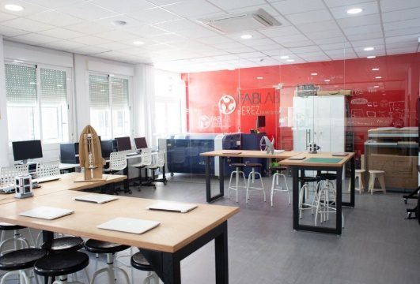
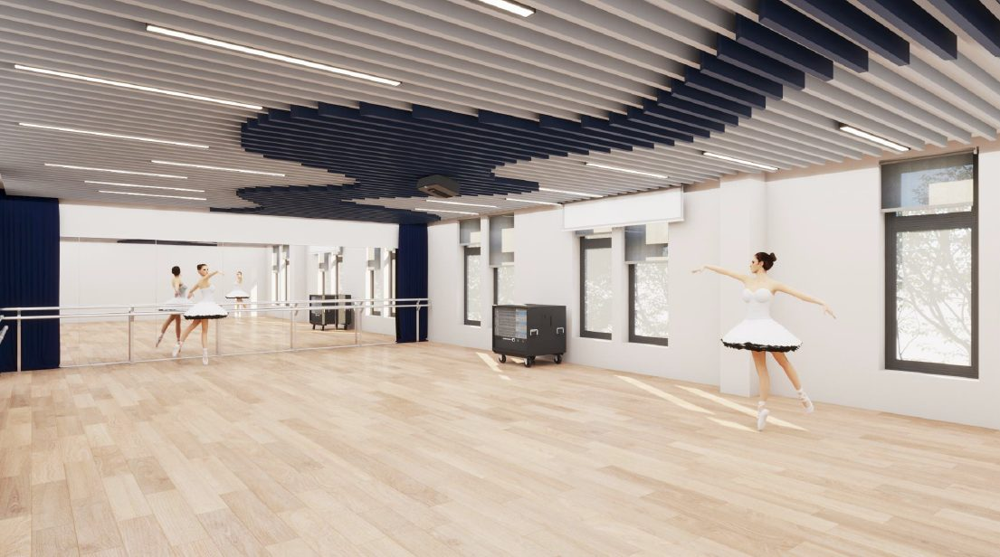
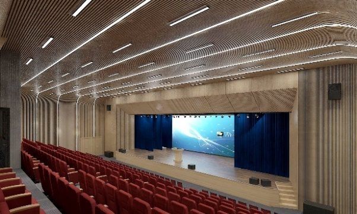
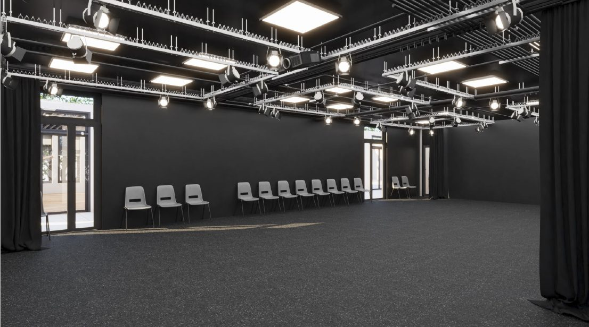
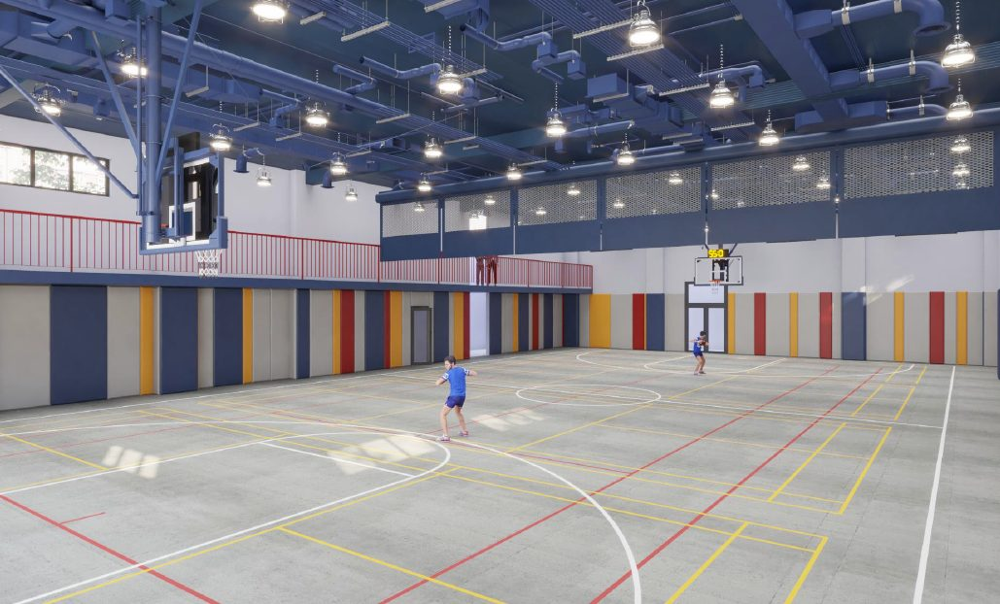
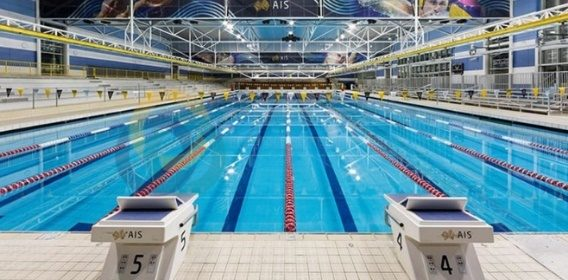
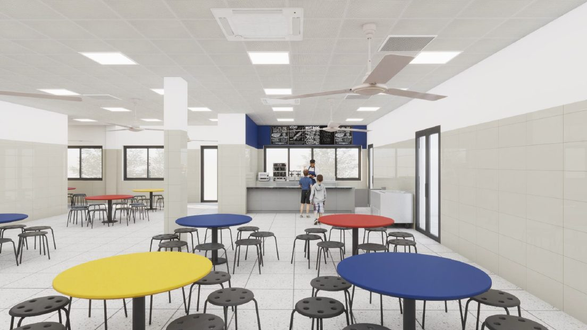
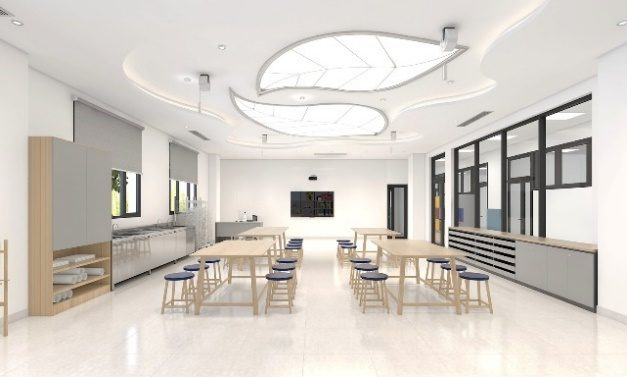
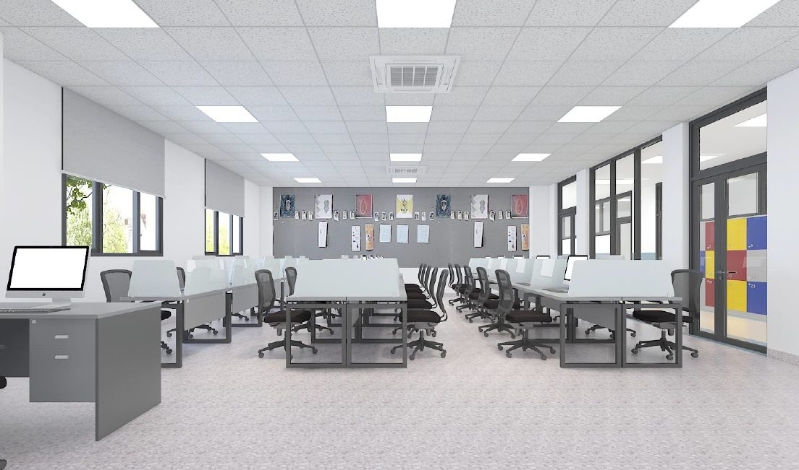
The first cohort opens with primary and lower-secondary only. High school launches in Year 4 once the primary base is mature. Year 5 reaches 1,020 students — about half the eventual capacity.
| Level | Y1 | Y2 | Y3 | Y4 | Y5 |
|---|---|---|---|---|---|
| Primary classes | 5 | 9 | 13 | 15 | 19 |
| Primary students | 150 | 270 | 390 | 450 | 570 |
| THCS classes | 2 | 5 | 8 | 9 | 11 |
| THCS students | 60 | 150 | 240 | 270 | 330 |
| THPT classes | 0 | 0 | 0 | 3 | 4 |
| THPT students | 0 | 0 | 0 | 90 | 120 |
| Total students | 210 | 420 | 630 | 810 | 1,020 |
| Level | VND/student/month | VND/student/year (10 mo) |
|---|---|---|
| Primary | 15 M | 150 M |
| Lower-secondary (THCS) | 20 M | 200 M |
| High school (THPT) | 20 M | 200 M |
10 months of tuition collected per academic year. The source model holds tuition flat across 35 years (effective 0% inflation — see §8). The §5 live model defaults to the same; the inflation slider lets you compound at any rate up to 5%/yr to see the upside.
This is the curve every investor in this case has to be comfortable with: a deep early trough driven by the Y3 expansion CapEx, then a long, steady recovery as enrollment compounds toward the 2,000 cap.
50 B VND goes out the door in Year 0 to renovate the existing facility. Year 1 opens with 210 students; at 35% target margin, Y1 contribution is ~12 B VND, so cumulative ends Y1 at −38 B. By Y2 enrollment doubles to 420; cumulative climbs to about −13 B. Almost back to break-even on the original investment, before Y3 hits.
200 B VND of expansion CapEx hits in Year 3 — the build-out needed to support the full 2,000-student capacity. This is the moment the case lives or dies on. Y3 operating profit is healthy (~37 B), but the CapEx swamps it: the cumulative drops from −13 B to −176 B VND, the deepest point in the entire 35 years.
From Y4 onward, enrollment grows toward the 2,000 cap (reached around Y10) and there is no further CapEx in the base case. Annual cash flow climbs from ~49 B in Y4 to ~123 B at capacity. Cumulative crosses zero in Y5.86, hits +452 B by Y10, and ~3,500 B by Y35.
Every slider below recomputes the cumulative cash-flow curve, the headline NPV/IRR, and payback in real time. Defaults match the base case. The diff against base updates as you change inputs.
The base case treats operating cost as 65% of revenue — a target margin, not a built-up cost stack. This implicitly assumes variable cost behavior for staff, which is wrong in early years (teachers are largely fixed against enrollment). The slider lets you stress this; in reality, Y1–Y2 operating cost is likely a higher share of revenue than the late years. A bottom-up cost build is on the v2 list — see §8.
Three scenarios with assigned probabilities. Each is a small tweak to the base-case assumptions, run through the same model. Probabilities reflect our judgment on demand, execution, and CapEx risk — not historical frequency.
Y5 enrollment lands at 70% of plan (~715 students vs 1,020). The school still works long-term, but the recovery from the Y3 deficit drags 2–3 years longer and total NPV compresses materially.
Why this probability: Demand-side risk is the single biggest uncertainty. A new bilingual school competing for parents' attention against incumbent brands has real launch risk in years 1–2, even with the tailwinds.
All assumptions as modeled, mirroring the source Excel: 15/20/20 M VND tuition (held flat), 65% op-cost ratio, 50 B Y0 + 200 B Y3 CapEx, 1,020 students by Y5, growth to 2,000 cap by Y10.
Why this probability: The published demand and policy backdrop is firm. The execution is concentrated in the Y3 build. If that lands and enrollment tracks plan in Y1–Y2, base case is the modal outcome.
Y3 CapEx runs 30% over (260 B); realized tuition is 90% of plan (competitive pressure or discounting in early cohorts). Combined effect deepens the trough by ~75 B and pushes payback 1–1.5 years out.
Why this probability: CapEx overruns on Vietnamese construction projects are common; tuition compression is plausible if a competing school launches in the same catchment. Both at once is less common than each individually.
NPV impact of ±20% changes to each major assumption, holding all others at base case. Sorted by magnitude. The chart confirms the expected ordering — operating-cost structure dominates, followed by enrollment realization at Y5.
An honest list of the things the cash-flow model under- or over-states. This section isn't a hedge — it's the part of the analysis that determines whether the headline numbers above can be trusted. Read it carefully.
The model assumes operating cost = 65% of revenue (the inverse of the 35% target PBT margin). A bottom-up build — teacher headcount × salary by level, plus admin, facilities, marketing, learning materials — would almost certainly show fixed costs dominating in Y1–Y2 (when revenue is small but the school is fully staffed). The §5 live model lets you stress the ratio, but the right fix is a real cost stack. This is the single biggest analytical gap.
The project document references 30 B VND for equipment and learning materials, funded by the investor group separately. The source cash-flow model does not include this. The §5 live model has a toggle: switching it on deepens the Y0 hole to −80 B and pushes payback out by ~3 months.5
The base case treats land rent between Tây Nam (facility owner) and Toàn Việt (operator) as zero (intercompany). For an investor evaluating Toàn Việt standalone, or for any future scenario where the two entities separate, market rent should be assumed. The §5 live model has a 0–20 B/yr slider so you can see what happens. At 10 B/yr market rent, NPV drops by ~110 B and payback shifts ~1 year later.
The source spreadsheet applies a one-time +3% bump to Y2–Y5 revenue rather than compounding year-over-year, and the 35-year cash flow line then ignores inflation entirely (effective rate: 0% across 35 years). To stay faithful to the source's published headline numbers, this page's base case also uses 0% effective inflation — so the 814 B NPV / 35.0% IRR / Y5.86 payback all reconcile to the source Excel exactly. The §5 live-model inflation slider lets you dial in true compound inflation. At 3%/yr compounded across 35 years, NPV roughly +60% over the source figure.
Annual cash flow at the 2,000-student cap is ~123 B VND — meaning Years 6 through 35 contribute the overwhelming majority of NPV. The base case fills the school from 1,020 to 2,000 over Y6–Y10. If that ramp slows materially, the long-tail NPV compresses. The §7 sensitivity captures a part of this; the §6 "slow ramp" scenario captures another part.
The 15/20/20 M VND tuition assumption is consistent with comparable bilingual schools in central HCMC, per the source project document — but a comparable table (named schools, current published tuition, programs) is not in this v1. It's on the v2 list. If realized tuition lands meaningfully below assumption, the §6 scenario 3 captures the impact.
No working capital, no depreciation, no tax. The IRR and NPV are pre-tax, on a target-margin construction. For a real cash payback profile in a real CFO sense, the model needs depreciation (at minimum, a straight-line on the 250 B CapEx), a working-capital schedule for tuition collection cycles, and a corporate tax line. None of these change the 35-year direction, but they sharpen the early years.
Every demand-side and structural claim in this page traces to one of the references below. Internal financial figures (NPV, IRR, payback, cash flow shape) are computed in this page from the source Excel model with the corrections noted in §8.